Transcriptome and Metabolome Correlation Analysis Report
Project Information
Project Number：demo_MetTran
Project Name：demo_MetTran
Report Date：2025-06-24
Report Number：demo_MetTran_20250424
Research Overview
The rapid development of multi-omics technologies has facilitated a transition from detailed reductionist studies to systematic, integrated investigations, enabling different omics datasets to complement and validate each other for comprehensive functional genomic interpretation. Genomics reveals the relationship between gene structure and function through whole-genome sequencing and functional annotation; transcriptomics studies gene transcription profiles and regulatory mechanisms at the whole-cell level; proteomics investigates the composition and dynamic changes of proteins as direct functional executors in organisms; while metabolomics examines the temporal changes of metabolites in biological systems under external stimuli or perturbations, representing the discipline closest to phenotypic manifestations. This integrated multi-omics approach provides a powerful framework for understanding biological systems from molecular to functional levels.[1]The integration of multi-omics data enables a comprehensive understanding of biological systems, and as research at individual omics layers progressively matures, the transition from compartmentalized investigations to holistic system-level analysis emerges as an inevitable trajectory in scientific advancement.
Transcriptomics investigates gene expression patterns at the RNA level, serving as a crucial approach for studying cellular functions.[2]Metabolomics, as an extension of it, is to reveal the mechanisms underlying biological processes by analyzing systematic changes in small-molecule metabolites. Metabolomics provides more phenotypically significant data support for transcriptomics. Our aim in integrating them is:
(1) Cellular activities are coordinately regulated by genes, proteins, and small-molecule metabolites, where functional changes in macromolecules ultimately manifest at the metabolic level. Subtle alterations in gene expression become amplified in metabolic profiles, thereby enhancing detection sensitivity;
(2) Non-functional genetic variations are not reflected in metabolic profiles, effectively filtering out noise during information flow from upstream to downstream pathwaysNon-functional genetic variations are not reflected in metabolic profiles, effectively filtering out noise during information flow from upstream to downstream pathways;
(3) The number of metabolite species is substantially smaller than that of genes.
Comparative analysis between transcriptomic and metabolomic data can uncover post-transcriptional regulatory states of gene expression. Consequently, the relationship between transcriptomics and metabolomics will likely become an indispensable component of future systems biology research. Figure 1 illustrates the workflow for integrative analysis of these two omics.
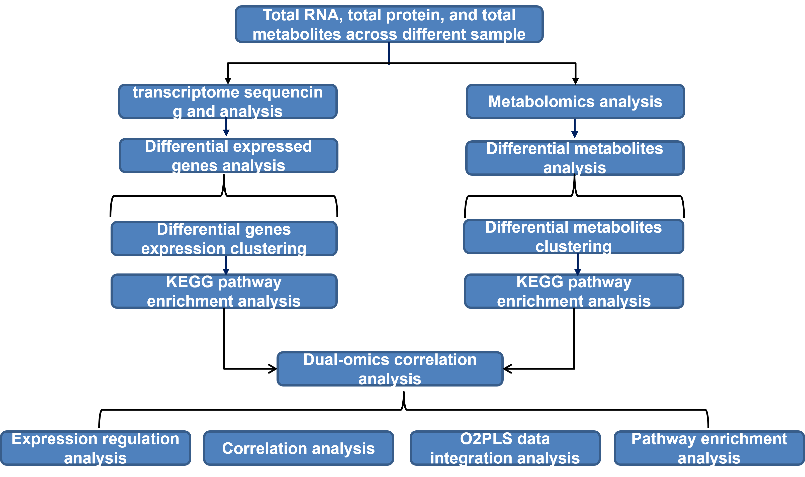
Figure 1. Transcriptomics and metabolomics correlation analysis workflow
Correlation Analysis
1.Transcriptome and Metabolome Project Overview
1.1 Comparison pair information
Table1.1 Comparison pair situations
| Metabolomics (M) | Transcriptomics (T) |
|---|---|
| demo_CK.vs.Test | CkSvstestS |
1.2 Sample information
Table1.2 Sample information
| Metabolome sample | Metabolome sample in groups | Transcriptome sample | Transcriptome sample in groups |
|---|---|---|---|
| CK1 | demo_CK | CkS1 | CkS |
| CK2 | demo_CK | CkS2 | CkS |
| CK3 | demo_CK | CkS3 | CkS |
| Test1 | Test | testS1 | testS |
| Test2 | Test | testS2 | testS |
| Test3 | Test | testS3 | testS |
1.3 Transcriptomic-Metabolomic regulatory analysis
Transcriptomics and metabolomics measure the expression levels of genes and metabolites in biological specimens (whole organisms, tissues, or cells) under specific conditions. The differential analysis results for each comparison group are presented in the table1.3 below.
Table1.3 Results of differential gene analysis
| Compared Samples | Type | GeneNum | MetNum_neg | MetNum_pos |
|---|---|---|---|---|
| demo_CK.vs.Test(CkSvstestS) | Up | 1551 | 19 | 16 |
| demo_CK.vs.Test(CkSvstestS) | Down | 1277 | 9 | 14 |
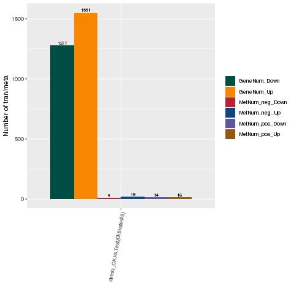
The detailed results of table: (1) Compared Samples：the former vs the latter; (2) Type：Identified and significant type; (3) GeneNum: Total number of genes with significant difference; (4) MetNum: Total number of metabolites with significant difference.
Corresponding result catalog：statistical table: Result/1.sum/table.xls，statistical bar chart: Result/1.sum/bar.{pdf,png}
1.4 Nine-Quadrant correlation analysis
Quadrant analysis is a widely used method in correlation studies that enables deeper understanding and insights from complex datasets. The nine-quadrant approach allows identification of key factors with the greatest influence on specific biological phenomena, reveals potential relationships between different variables, and provides visual representation through partitioning data into nine distinct quadrants. In multi-omics integration studies, this method effectively analyzes correlations between two omics data types. The metabolite-gene nine-quadrant plot specifically facilitates screening of significantly altered metabolite-gene pairs, where the abscissa represents transcriptomic fold changes (log2-transformed) and the ordinate displays metabolomic fold changes (log2-transformed). The results are shown in Figure 5.4 (see the result file for the high-definition version of the picture).
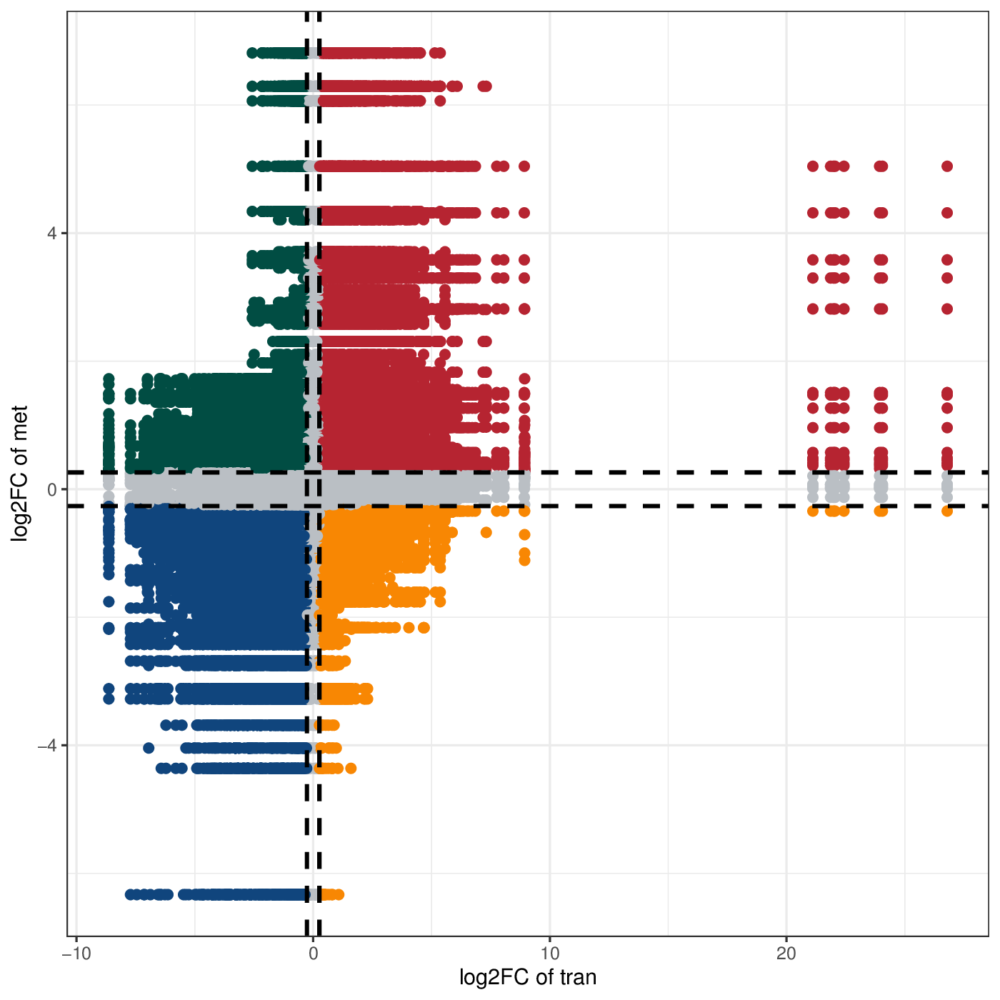
{kind=link}
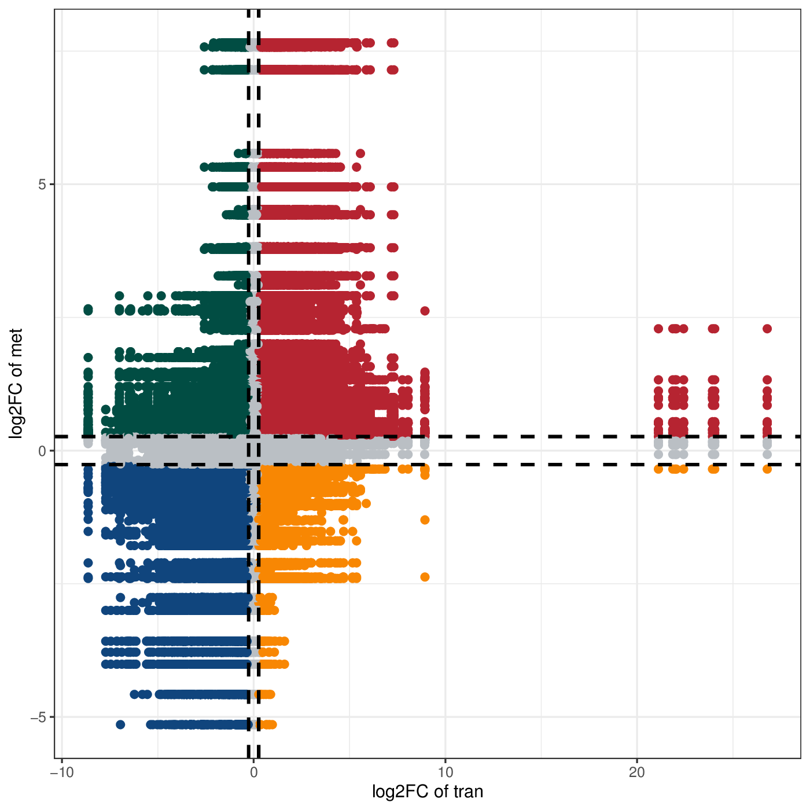
{kind=link}
Figure1.4 Nine-Quadrant correlation analysis (The upper box is the positive ion mode, the lower box is the negative ion mode)
Note：the abscissa represents transcriptomic fold changes (log2-transformed) and the ordinate displays metabolomic fold changes (log2-transformed).
Corresponding result catalog：Nine-Quadrant diagram/Result-*/1.sum/*/*_ninedata.xls.*
2.Correlation analysis of differential gene and metabolite expression
2.1 Correlation heatmap analysis
To evaluate the correlation between significantly differential genes identified through transcriptomics analysis and differential metabolites derived from metabolomics analysis by calculating Pearson correlation coefficient between genes and metabolites. Gene-metabolite pairs with correlation coefficients |r| less than 0 were defined as exhibiting negative correlation, while those with |r| greater than 0 demonstrated positive correlation.


Figure2.1 Differential metabolites and genes expression correlation analysis heatmap (The upper box is the positive ion mode, the lower box is the negative ion mode)
Note: The vertical axis represents differential metabolites , while the horizontal axis displays differential genes . The blue represents negative correlation, and the red represents positive correlation. The presented correlation table features the top 500 most statistically significant differential metabolites and genes (ranked by ascending p-value), demonstrating pairwise interactions between these prioritized molecular features.
Corresponding result catalog：Correlation table: Result/2.corr/*.vs.*/*.vs.*_corr.xls，Correlation heatmap:Result/2.corr/*.vs.*/*.vs.*_corrplot_heatmap.{pdf,png}
2.2 Correlation network analysis
The relationship between metabolites and genes can be visualized through network diagrams, and the selected top10 differential genes and top5 differential metabolites were selected for the network display. The metabolites were marked by yellow and the genes were marked by blue, the line between the metabolites and genes represents the correlation between the two metabolites. The results are shown below:
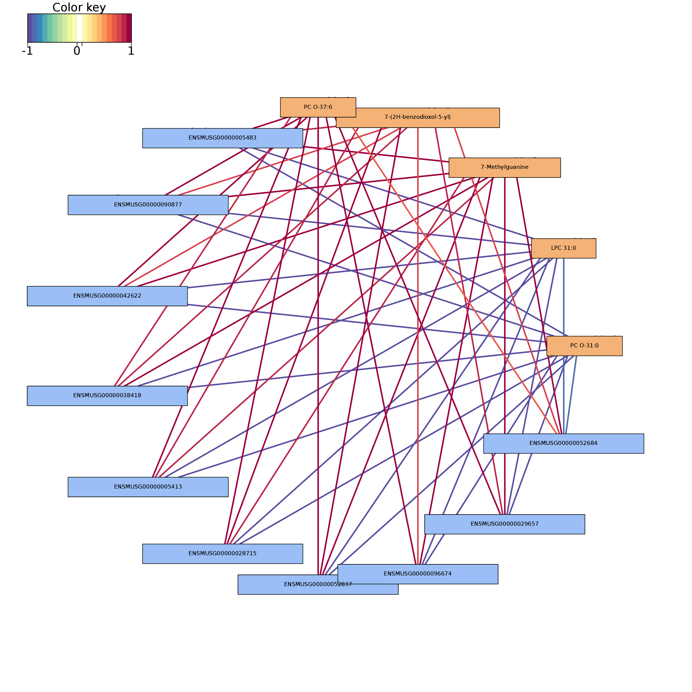
{kind=link}
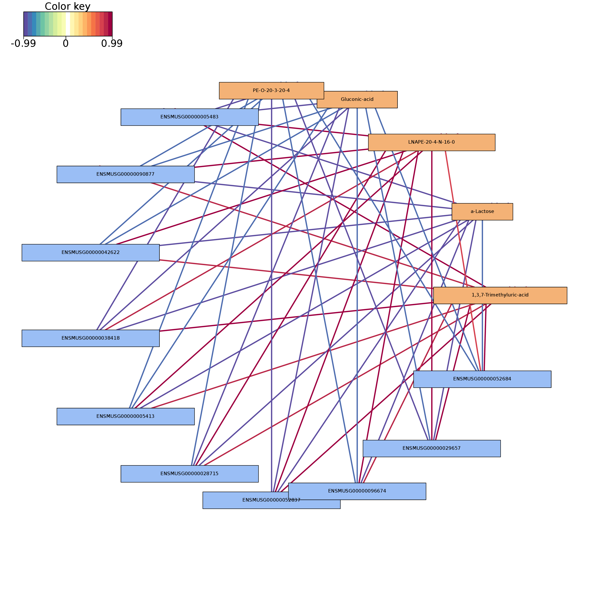
{kind=link}
Figure2.2 Correlation network diagram (The upper box is the positive ion mode, the lower box is the negative ion mode)
Note：In the graphical representation, rectangular nodes denote molecular entities, with color coding distinguishing metabolite and gene features: yellow rectangles represent metabolites while blue rectangles indicate genes. Edge coloration encodes correlation directionality, with red lines designating positive associations (r > 0) and blue lines signifying negative relationships (r < 0). Edge color intensity scales proportionally with the absolute correlation coefficient magnitude (|r|), where deeper hues reflect stronger correlations.
Corresponding result catalog: network diagram:Result/2.corr/*.vs.*/*.vs.*_meta_tran_corr_net.{pdf,png}
3.O2PLS data integration analysis
The O2PLS (Two-Way Orthogonal Partial Least Squares) approach enables bidirectional modeling and predictive analysis between two omics datasets, facilitating the identification of intrinsic relationships and quantification of inter-omics associations. The two-omics data inputted to O2PLS must be potentially associated, and the results of the analysis show the differential genes and differential metabolites related to the association between the two-omics and the genes and metabolites that rank in the top 10 of the contributing genes and metabolites are annotated. Some of the results are shown below (see the result file for the high-definition version of the picture):
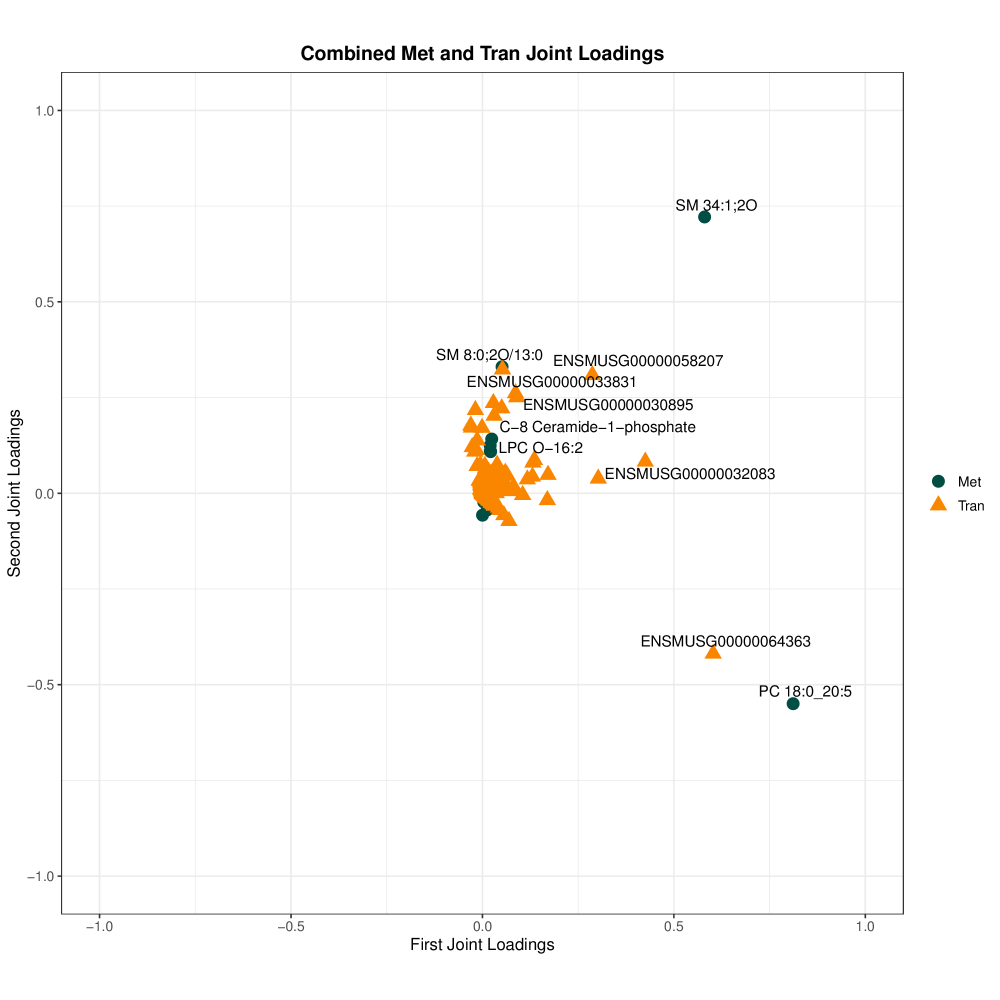
{kind=link}
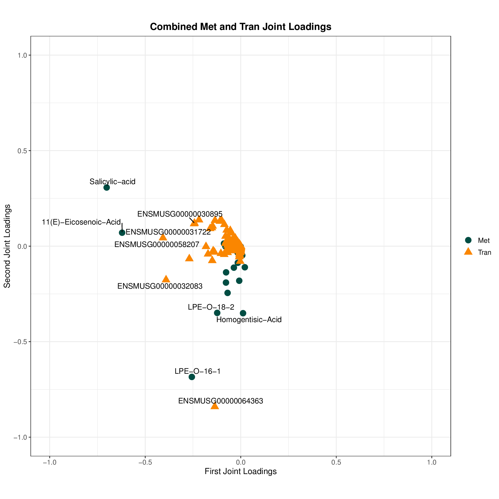
{kind=link}
Figure3. O2PLS data integration analysis (The upper box is the positive ion mode, the lower box is the negative ion mode)
Note: The yellow triangles in the figure represent genes and the green dots represent metabolites. The horizontal and vertical coordinates of the graph indicate the scores of metabolome and transcriptome association. The distance from the origin of each point in the graph represents the weight of the gene or metabolite in the association analysis. The further away from the origin, the more the changes of the gene/metabolite affects the other grouping; the closer the distance between the two points, the more relevant the correlation between them is.
Corresponding result catalog：O2PLS analysis diagram/Result-*/3.O2PLS/*/*_met_tran_O2PLS.png
4.Differential genes and metabolites pathway enrichment analysis
4.1 KEGG enrichment analysis
All the obtained differential genes and metabolites were mapped to the KEGG pathway database to obtain their common pathway information, and identify the major biochemical pathways and signaling pathways in which the differential metabolites and genes are involved together. Some of the results are shown below（see the result file for the high-definition version of the picture).
Table4.1 Differential genes and metabolites KEGG pathway analysis
| Description | Pvalue | Ratio | Count | Type | ID |
|---|---|---|---|---|---|
| Serotonergic synapse | 0.011846 | 0.500000 | 2 | Meta | Prostaglandin G2; Thromboxane B2 |
| Serotonergic synapse | 0.852561 | 0.132075 | 14 | Tran | ENSMUSG00000024190/ENSMUSG00000032766/ENSMUSG00000068086/ENSMUSG00000020182/ENSMUSG00000003053/ENSMUSG00000025004/ENSMUSG00000025002/ENSMUSG00000000441/ENSMUSG00000034656/ENSMUSG00000032487/ENSMUSG00000033676/ENSMUSG00000060613/ENSMUSG00000025003/ENSMUSG00000032839 |
| Platelet activation | 0.049587 | 1.000000 | 1 | Meta | Prostaglandin G2 |
| Platelet activation | 0.837398 | 0.135593 | 16 | Tran | ENSMUSG00000062825/ENSMUSG00000020689/ENSMUSG00000026043/ENSMUSG00000033831/ENSMUSG00000028001/ENSMUSG00000033860/ENSMUSG00000029580/ENSMUSG00000004864/ENSMUSG00000015533/ENSMUSG00000020431/ENSMUSG00000047953/ENSMUSG00000020901/ENSMUSG00000024965/ENSMUSG00000053137/ENSMUSG00000022610/ENSMUSG00000027765 |
| ABC transporters | 0.063365 | 0.222222 | 2 | Meta | L-lysine; N-acetyl-D-glucosamine |
Note: 1) Description：Pathway name of the differential metabolite/gene in the KEGG pathway database 2) Pvalue：P-value of pathway enrichment [transcription or metabolism] 3) Ratio：The number of differential metabolites/genes in the corresponding metabolic/genetic pathway/the number of total metabolites/genes identified in the pathway 4) Count：Number of enriched metabolites/genes in the pathway 5) Type：Data type, derived from metabolome or transcriptome 6) ID：ID of metabolites or genes enriched in the pathway
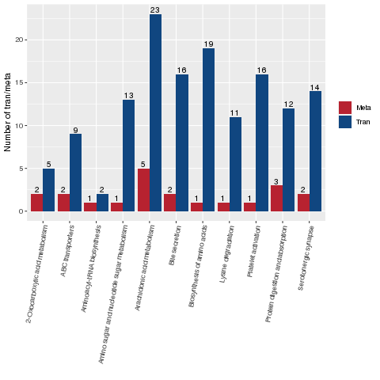
{kind=link}
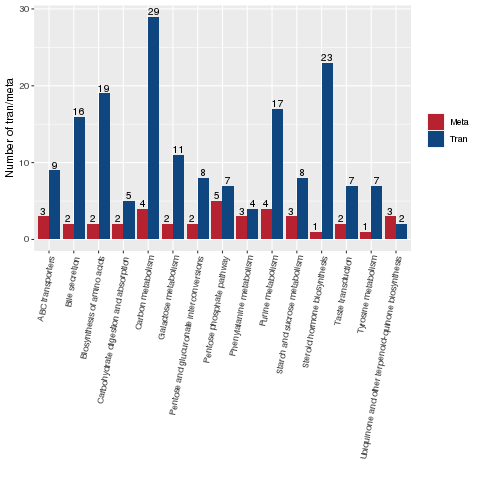
{kind=link}
Figure 4.1 Statistical map of the distribution of differential genes and metabolites KEGG pathways (the upper box is the positive ion mode and the lower box is the negative ion mode)
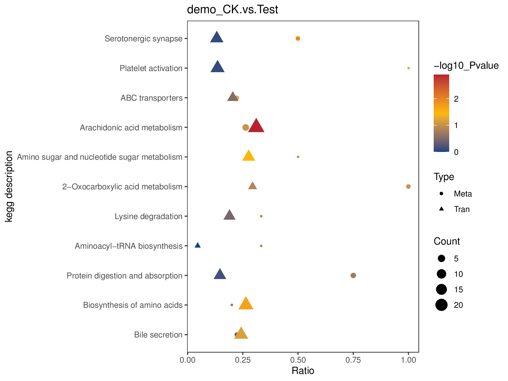
{kind=link}
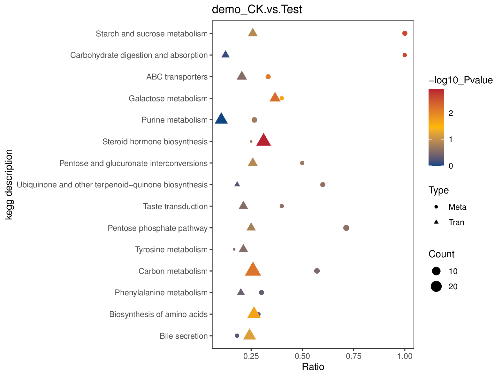
{kind=link}
Figure 4.2 Differential gene and differential metabolite KEGG enrichment bubble diagram (the upper box is the positive ion mode and the lower box is the negative ion mode)
Note: The horizontal coordinate is the ratio (Ratio) of the differential metabolites or differential genes enriched in the pathway to the number of metabolites or genes annotated in the pathway, and the vertical coordinate is the metabolome-transcriptome co-enrichment to the KEGG pathway. count: the number of metabolites or genes enriched in the pathway. The color indicates the P-value, the redder the color the smaller the P-value, the more significant the pathway enrichment is.
Corresponding result catalog：Kegg bubble diagram: Result/3.kegg/3.1.share_pathway/*.vs.*/*.vs.*_kegg_enrichment_share.scatterplot.dv.{pdf,png}
4.2 iPath pathway visualization analysis
iPath (Interactive Pathways Explorer) [https://pathways.embl.de/] is a visual pathway diagram online analysis tool. It summarizes various metabolic pathways in biological systems, with nodes indicating various biochemical molecules and lines indicating biochemical reactions. Enrichment pathways shared by differential metabolites and genes are mapped simultaneously to the iPath website. As in Figure 4.3.
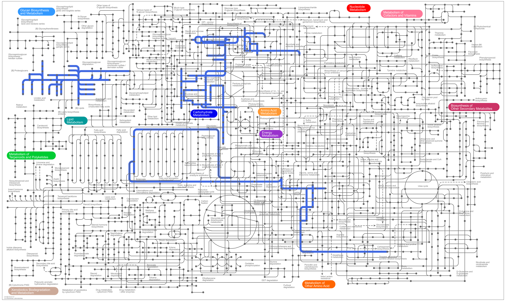
{kind=link}
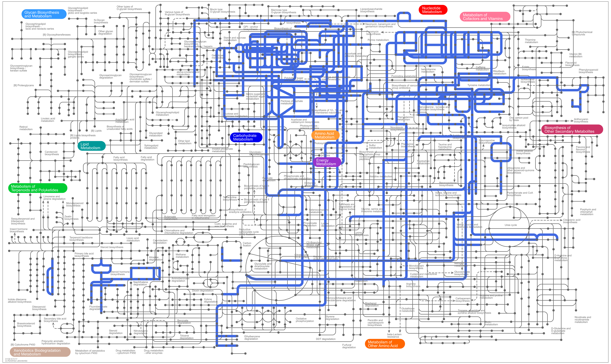
{kind=link}
Figure 4.3 iPath pathway diagram for the shared enrichment pathway (the upper box is the positive ion mode and the lower box is the negative ion mode)
Note: Blue lines in pathways indicate common enrichment pathways.
Corresponding result catalog：iPath of kegg Result/3.kegg/3.2.ipath/*.vs.*/*.vs.*.{pdf,png}
4.3 KEGG pathview visualization analysis
Based on the above enrichment results, pathway diagrams were displayed for metabolic pathways co-enriched by metabolomics and transcriptomics. In the KEGG pathway diagram, circles represent metabolites, blue circles are down-regulated differential metabolites, and yellow circles are up-regulated differential metabolites; boxes represent genes or proteins, in which green boxes represent genes with differentially down-regulated expression and red boxes represent genes with differentially up-regulated expression. The results are shown below:
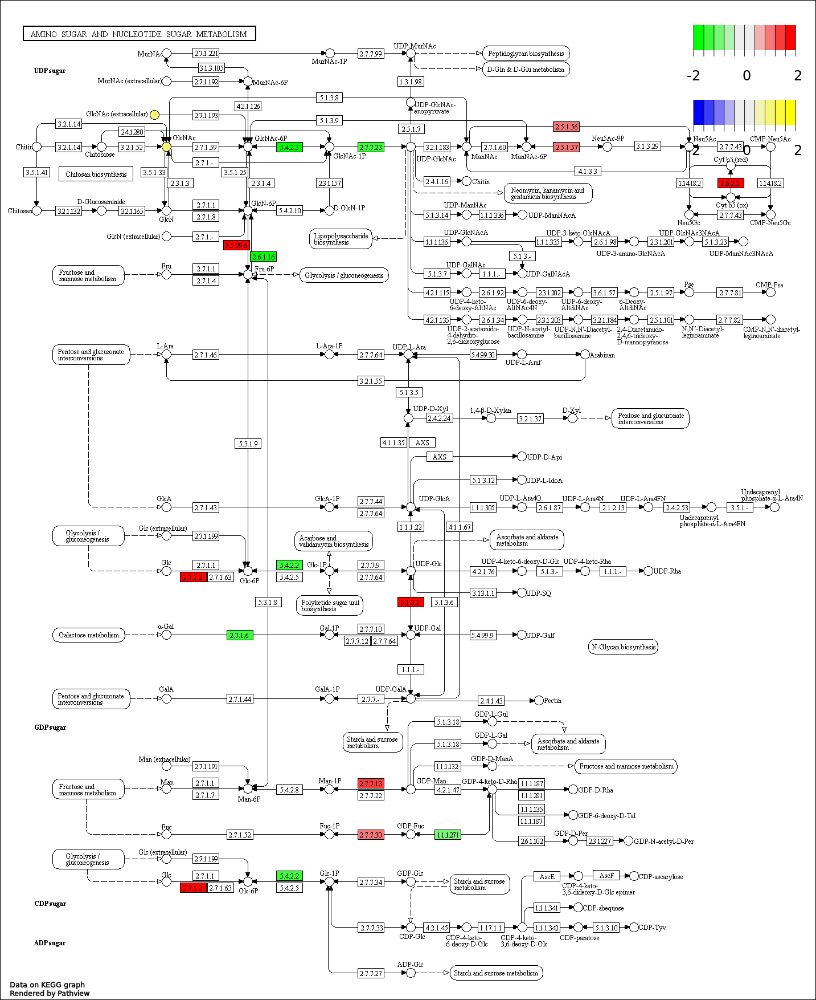
{kind=link}
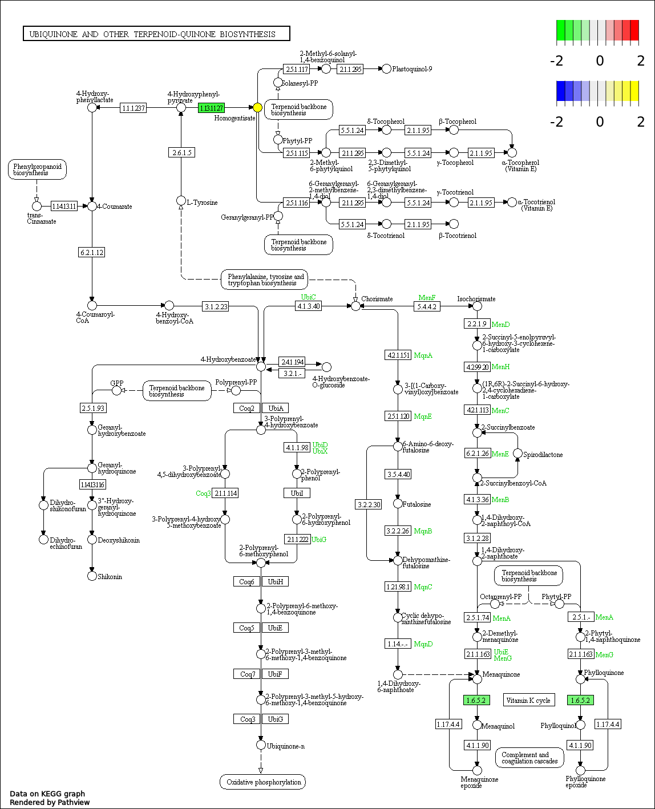
{kind=link}
Figure 4.4 pathview pathway enrichment diagram (the upper box is the positive ion mode and the lower box is the negative ion mode)
Note: KEGG-enriched pathway diagrams for metabolites and genes are labeled with log2(FC) for metabolites and genes, with the first legend green to red representing FC for genes, and the second legend blue to yellow representing FC for metabolites.
Corresponding result catalog：Pathview of kegg: Result/3.kegg/3.3.pathview/*.vs.*/ko*.*.vs.*.{pdf,png}
Reference
[1] Dunn, W.B. et al. Procedures for large-scale metabolic profiling of serum and plasma using gas chromatography and liquid chromatography coupled to mass spectrometry. Nature protocols. 6,1060-1083 (2011).[2] Griffiths, W. J. & Wang, Y. Mass spectrometry: fromproteomics to metabolomics and lipidomics. Chemical Society Reviews. 38, 1882–1896 (2009).
[3] Karnovsky, A. et al. Metscape 2 bioinformatics tool for the analysis and visualizationof metabolomics and gene expression data. Bioinformatics.28,373-380 (2012).
[4] Bouhaddani, SE. et al. Evaluation of O2PLS in Omics data integration. BMC Bioinformatics. 17 Suppl 2,11 (2016).
[5] Ivica Letunic, A. et al. iPath: interactive exploration of biochemical pathways and networks. Trends in biochemical sciences.33(3), 101-3 (2008).